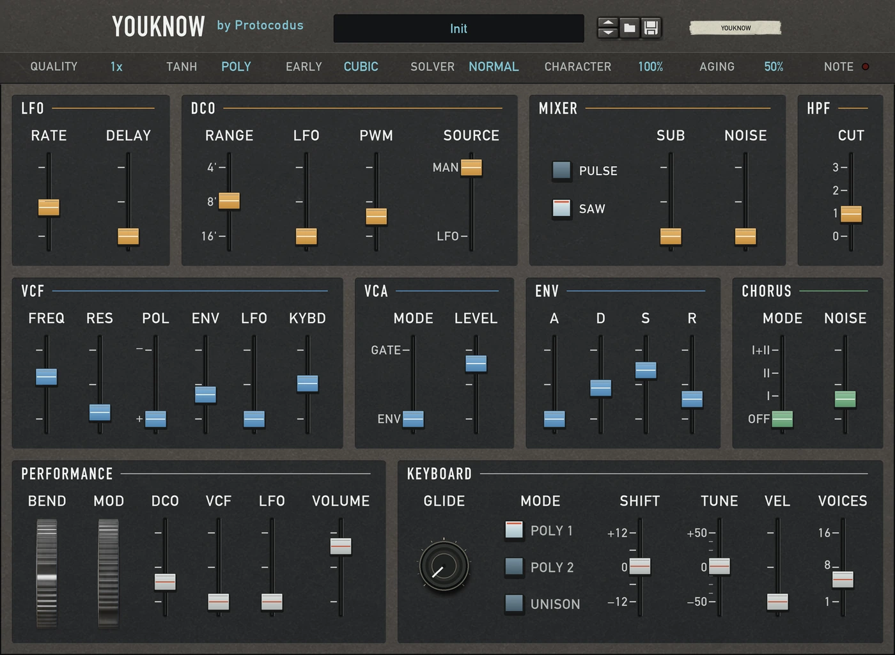
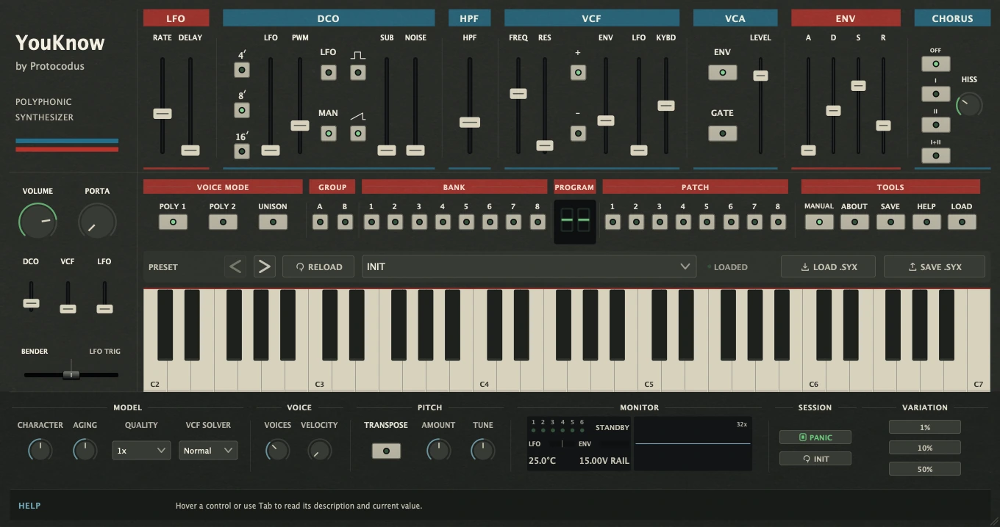

YouKnow
Pads, strings, bass and leads from a synth inspired by the Juno-106. YouKnow models its six-voice architecture in software, with the synthesis controls together on one panel.
Name your price on Gumroad. Downloads are not yet available.


Oscillators, filter and chorus.
- Oscillators. Combine saw and pulse waves, add a sub oscillator and blend in noise. Pulse-width modulation adds movement to a held note.
- Filter and envelope. Shape swells, stabs and sweeps. At full resonance, the filter self-oscillates and becomes a playable tone.
- Stereo chorus. Choose mode I for a slower swirl, II for faster movement or I+II for a narrower texture. Adjust the hiss separately.
- Voice character. Unit Character varies the modelled components between voices. Aging adds filter drift and noise.
- Polyphony and unison. Set the voice count from one to sixteen for chords, or stack voices on a single note. Add portamento to glide between notes.
- Performance controls. Set velocity response, play with pitch bend and modulation, and automate synthesis controls in your DAW.
Presets and session recall.
Browse the plug-in's factory bank or choose INIT to build a patch from scratch. Hover a control for help, then save your DAW project or a host preset to keep the complete setup.
The Rack Extension uses Reason's patch browser and a separate bank of original Protocodus sounds. Both versions offer quality settings to balance CPU use and oversampling.
Plug-in: macOS 11 or later, Apple silicon or Intel · VST3, Audio Unit and a standalone app.
Rack Extension: Reason 14 or later.
YouKnow support.
For setup help or troubleshooting, email your YouKnow version, DAW, operating system and a description of the issue.
protocodus@proton.me